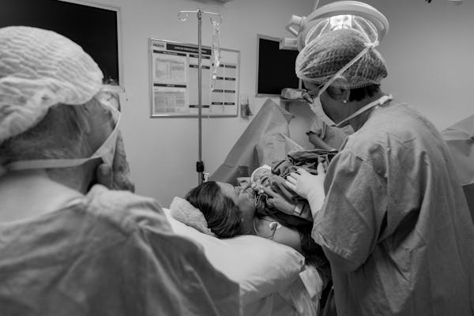

Light microscopy is a general term used for any type of microscopy where light is being transmitted from a source which is on the opposite side of the sample, to the objective lens.

An operating theater (also known as an Operating Room (OR), operating suite, operation suite, or Operation Theatre (OT)) is a facility within a hospital where surgical operations are carried out in an aseptic environment.